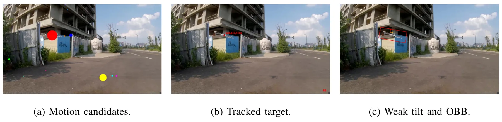
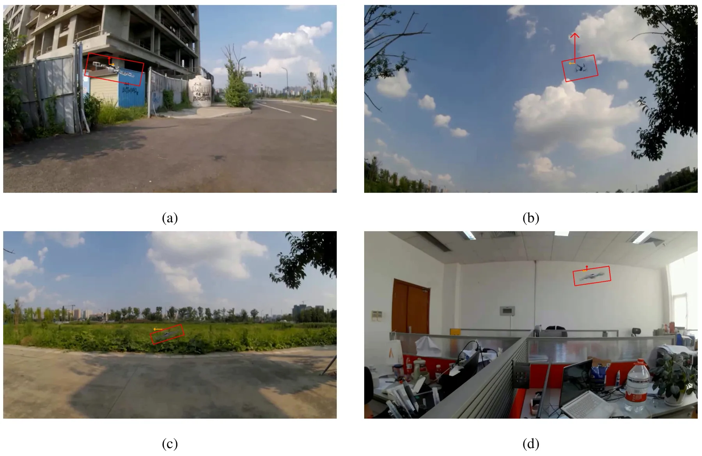

面向机动 UAV 多相机光电观测的图像域倾角约束分布式融合Image-Domain Tilt Constrained Distributed Fusion for Maneuvering UAV Tracking with Multi-Camera Electro-Optical Observations
贴近 UAV、多相机异步融合和视觉/IMU 辅助跟踪；虽不是 GNSS/SLAM，但对多传感器融合定位有较强参考价值。
一句话工作总结
把图像中的 UAV 倾角当作加速度伪观测，提升多相机分布式跟踪的短时机动预测能力。
摘要
该文提出 image-domain tilt constrained distributed fusion，用目标在图像中的 apparent roll/pitch 作为低层机动 cue，缓解图像中心、视线和距离测量对加速度约束较弱导致的短时预测滞后。前端先用同步视频、云台 IMU 和 UAV IMU 弱先验自动生成 oriented bounding box 与 tilt 标签，再训练 YOLO-OBB 在线输出目标位置和 tilt。融合阶段把 UAV 状态建模为位置、速度、加速度，并将图像域 roll/pitch 作为 acceleration-related pseudo-observations；一个移动云台相机和两个固定地面相机异步融合，同时增广相机姿态误差状态吸收外参漂移。仿真中 prediction RMSE 从 1.991 m 降到 0.821 m，真实实验累计预测误差降低 18.10%。
Short-horizon prediction is essential for electro-optical UAV tracking, especially when the target is small, maneuvering, or intermittently observed. Image center, line-of-sight, and range measurements provide direct constraints on target position, but their constraints on acceleration are weak. As a result, prediction can lag during aggressive maneuvers. This paper proposes an image-domain tilt constrained distributed fusion method for maneuvering UAV tracking. The method uses the apparent roll and pitch of a rotorcraft target in the image as low-level maneuver cues. A weak-prior auto-labeling pipeline first generates oriented bounding box and image-domain tilt labels from synchronized video, gimbal IMU, and UAV IMU data. A YOLO-OBB detector is then trained to provide online target position and tilt measurements. The front-end Python implementation is publicly available at github.com/ShineMinxing/PythonYOLO. In the fusion stage, the UAV state is modeled by position, velocity, and acceleration. Image-domain roll and pitch are introduced as acceleration-related pseudo-observations. For distributed tracking, one mobile gimbal camera and two fixed ground cameras are fused asynchronously. Camera attitude error states are augmented into the filter to absorb extrinsic drift and cross-camera systematic inconsistency. A Mahalanobis gate with time-since-last-valid covariance widening is used to reject false detections and handle dropouts. In simulation, adding roll/pitch observations reduces the prediction RMSE from 1.991 m to 0.821 m and decreases the cumulative prediction error by 60.75\%. In real distributed experiments, a self-consistency evaluation shows an 18.10\% reduction in cumulative prediction error. The results show that image-domain tilt can provide useful acceleration constraints for robust short-horizon UAV prediction.
中文解读摘录
- 为什么看：这是今天最接近多传感器融合/无人机跟踪的论文。它把图像中旋翼机的 apparent roll/pitch 作为机动 cue，引入到分布式跟踪滤波中，补足图像中心、视线和距离对加速度约束不足的问题。
- 方法要点：用同步视频、云台 IMU 和 UAV IMU 做弱先验自动标注，训练 YOLO-OBB 在线输出目标位置和 tilt；融合阶段以位置、速度、加速度建模 UAV 状态，把图像域 roll/pitch 作为 acceleration-related pseudo-observations；一个移动云台相机和两个固定地面相机异步融合，并增广相机姿态误差状态吸收外参漂移。
- 结果信号：仿真中加入 roll/pitch 后 prediction RMSE 从 1.991 m 降到 0.821 m，累计预测误差降低 60.75%；真实分布式实验自一致性评价累计预测误差降低 18.10%。前端代码声称公开在 github.com/ShineMinxing/PythonYOLO。
- 跟踪建议：值得细读 filter formulation、Mahalanobis gate 与 time-since-last-valid covariance widening；可迁移到视觉/惯性/多相机目标跟踪与城市低空 UAV 监视。
- 链接：abs · PDF
图表/页面预览

{kind=link}

{kind=link}
